How to Edit the Print Settings in the Microsoft Whiteboard App (Windows 11)
This tutorial covers:
How to Change Printing Orientation:
How to Change Color Settings:
How to Change Paper Size
How to Change Printing Scale
How to Change Pages per Sheet
How to Change Margins
How to Add or Remove the Header and Footer
How to Add or Remove Background Graphics
How to Change Page Order
How to Change Paper Source
How to Change Media
No time to scroll down? Click through this presentation tutorial:
Watch a tutorial video:
How to Change Printing Orientation With Print Window
- Step 1: First open a whiteboard. On the keyboard press Ctrl + P.

- Step 2: In the Print window that opens, under the “Layout” section click to select “Portrait” or “Landscape”. 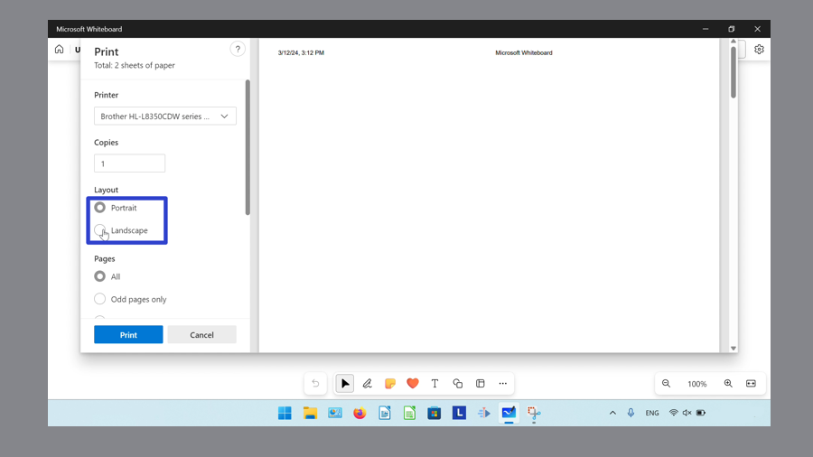
How to Change Printing Orientation With System Dialog
- Step 1: Open a whiteboard. On the keyboard press Ctrl + Shift + P. 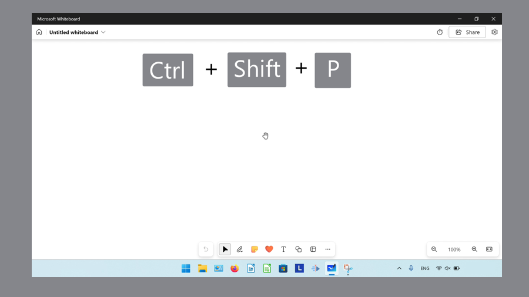
- Step 2: In the System Dialog window that opens, click the “Orientation” drop-down menu to select “Portrait” or “Landscape”. 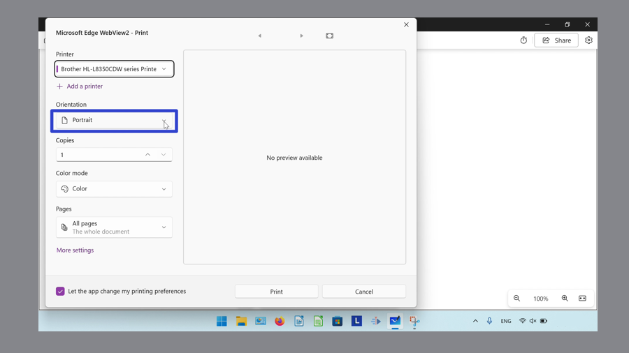
How to Change Printing Orientation With Printing Preferences
- Step 1: First open a whiteboard, and on the keyboard press Ctrl + Shift + P.
- Step 2: In the lower left of the System Dialog window that opens, click “More settings”. 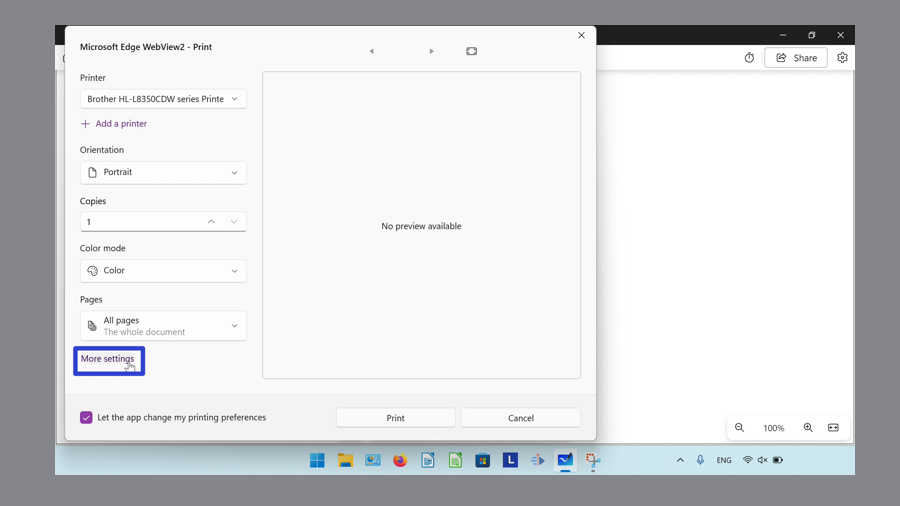
- Step 3: In the Printing Preferences window that opens, click the “Orientation” drop-down menu to select “Portrait” or “Landscape”, and click the “OK” button. 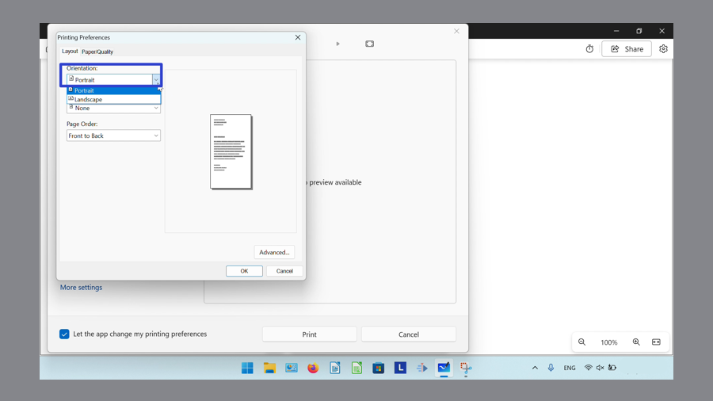
How to Change Color Settings With Print Window
- Step 1: Open. On the keyboard press Ctrl + P.
- Step 2: Scroll down and click the “Color” drop-down menu to select “Black and white” or “Color”. 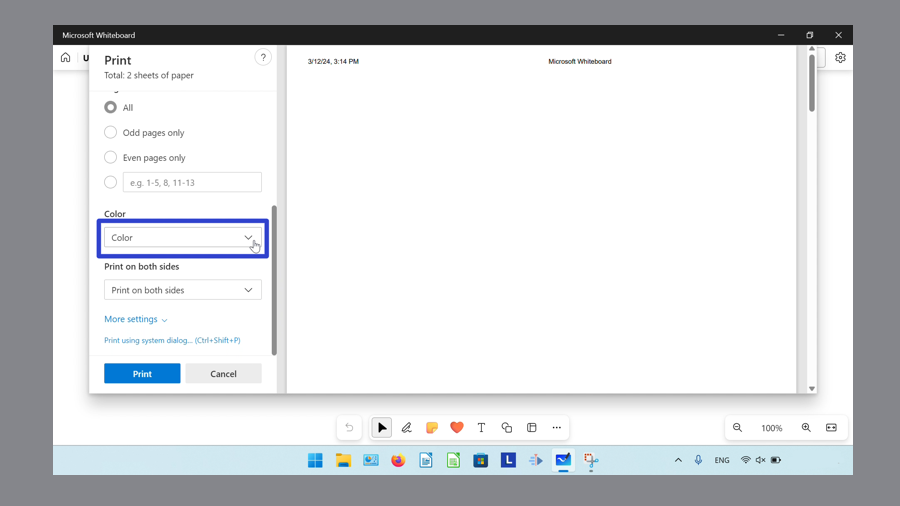
How to Change Color Settings With System Dialog
- Step 1: First open a whiteboard. On the keyboard press Ctrl + Shift + P.
- Step 2: In the System Dialog window that opens, click the “Color mode” drop-down menu to select “Color”, “Grayscale”, or “Monochrome”. 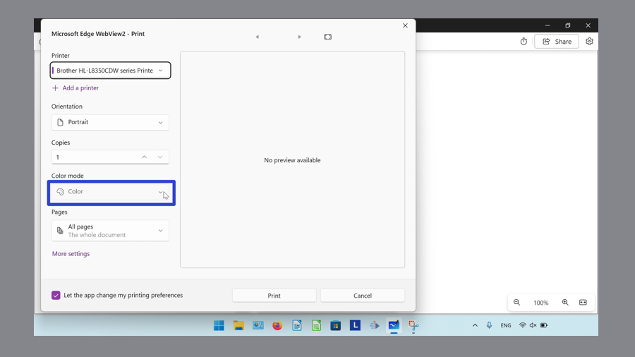
How to Change Color Settings With Printing Preferences
- Step 1: Open a whiteboard and on the keyboard press Ctrl + Shift + P.
- Step 2: In the lower left of the System Dialog window that opens, click “More settings”.
- Step 3: At the top of the Printing Preferences window that opens, click the “Paper/Quality” tab. 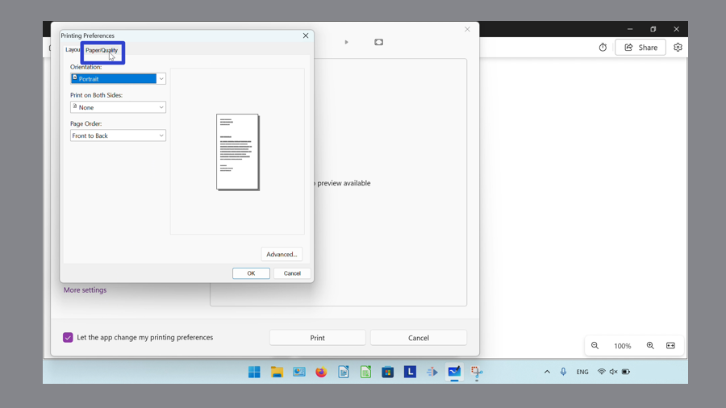
- Step 4: Under the “Color” section, click to select “Black and white” or “Color”, and click the “OK” button. 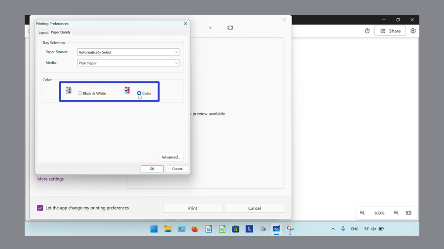
How to Change Paper Size
- Step 1: First open. a whiteboard, and on the keyboard press Ctrl + P.
- Step 2: In the Print window that opens, scroll down and click “More settings”. 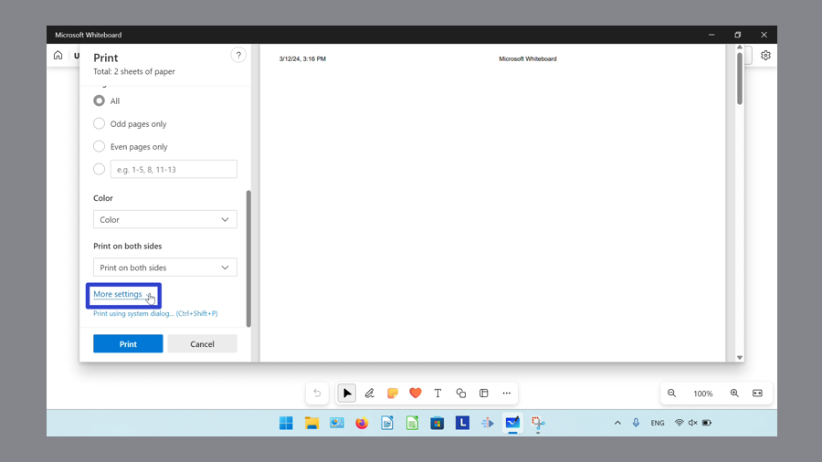
- Step 3: Click the “Paper size” drop-down menu to select one of the options (“Letter”, “Legal”, “Executive” “A4”, “A5”, “B5(JIS)”, “Envelope #10”, “Envelope DL”, “Envelope C5”, “Envelope B5”, “Envelope Monarch”, “A6” or “North America 3x 5”). 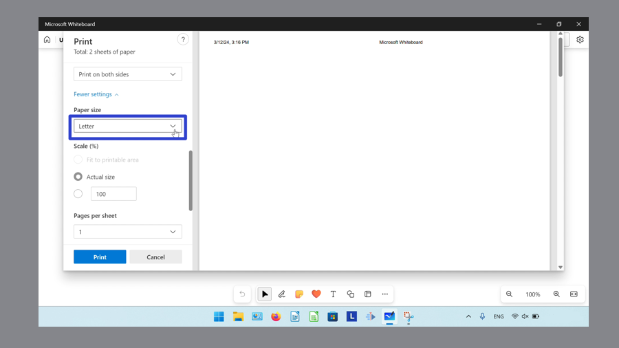
How to Change Printing Scale
- Step 1: Open a whiteboard, and on the keyboard press Ctrl + P.
- Step 2: In the Print window that opens, scroll down and click “More settings”.
- Step 3: Under the “Scale (%)” section, click “Fit to printable area”, “Actual size”, or “100%”. For “100%”, either type a number, or click the up and down arrows to adjust the percentage. 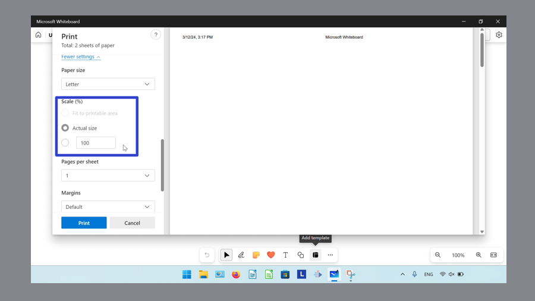
How to Change Pages per Sheet
- Step 1: First open a whiteboard, and on the keyboard press Ctrl + P.
- Step 2: In the Print window that opens, scroll down and click “More settings”.
- Step 3: Click the “Pages per sheet” drop-down menu to select one of the options (“1”, “2”, “4”, “6”, “9”, or “16”). 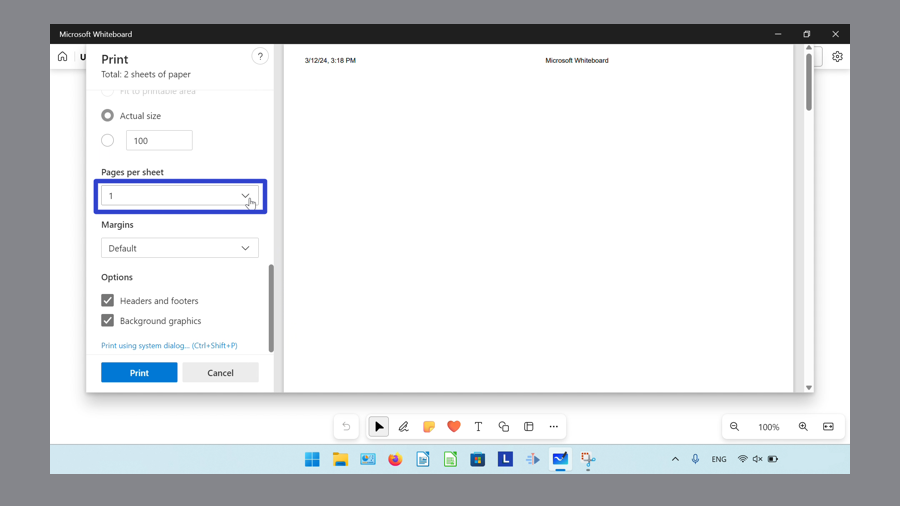
How to Change Margins
- Step 1: Open a whiteboard, and on the keyboard press Ctrl + P.
- Step 2: In the Print window that opens, scroll down and click “More settings”.
- Step 3: Click the “Margins” drop-down menu to select “Default”, “None”, “Minimum”, or “Custom”. For the “Custom” option, type a number in the “Top”, “Bottom”, “Left”, and “Right” fields to specify the margins. 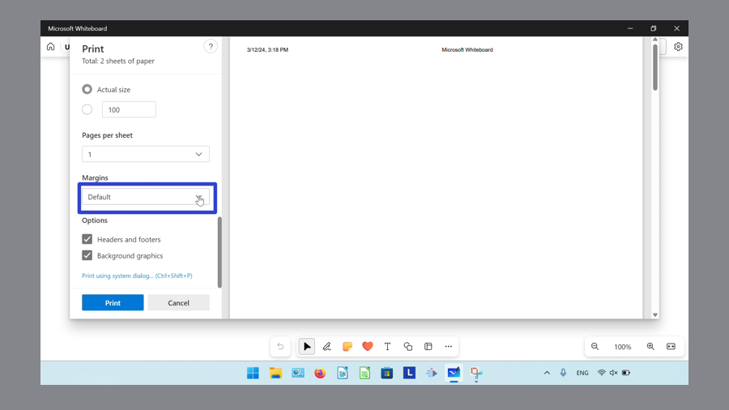
How to Change Add or Remove the Header and Footer
- Step 1: First open a whiteboard, and on the keyboard press Ctrl + P.
- Step 2: In the Print window that opens, scroll down and click “More settings”.
- Step 3: Click to toggle the “Headers and footers” option on or off. 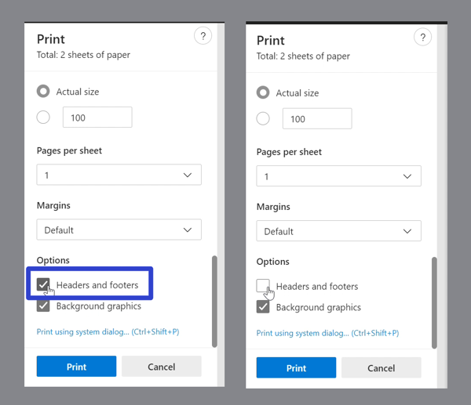
How to Add or Remove Background Graphics
- Step 1: Open a whiteboard, and on the keyboard press Ctrl + P.
- Step 2: In the Print window that opens, scroll down and click “More settings”.
- Step 3: Click to toggle the “Background graphics” option on or off.
How to Change Page Order
- Step 1: First open a whiteboard, and on the keyboard press Ctrl + Shift + P.
- Step 2: In the lower left of the System Dialog window that opens, click “More settings”.
- Step 3: In the Printing Preferences window that opens, click the “Page order” drop-down menu to select either “Front to back” or “Back to front” and click the “OK” button. 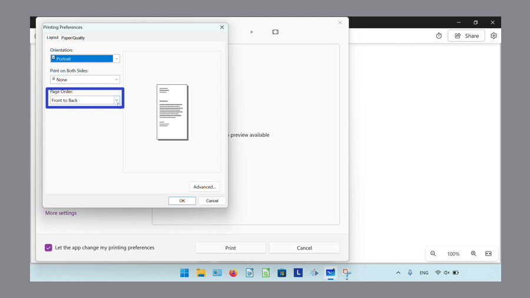
How to Change Paper Source
- Step 1: Open a whiteboard, and on the keyboard press Ctrl + Shift + P.
- Step 2: In the lower left of the System Dialog window that opens, click “More settings”.
- Step 3: At the top of the Printing Preferences window that opens, click the “Paper/Quality” tab.
- Step 4: Click the “Paper Source” drop-down menu to select “Automatically select”, “Multipurpose tray”, or “Tray 1” and click the “OK” button. 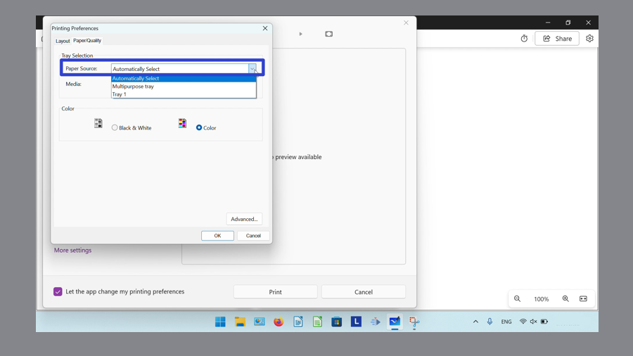
How to Change Media
- Step 1: First open a whiteboard, and on the keyboard press Ctrl + Shift + P.
- Step 2: In the lower left of the System Dialog window that opens, click “More settings”.
- Step 3: At the top of the Printing Preferences window that opens, click the “Paper/Quality” tab.
- Step 4: Click the “Media” drop-down menu to select one of the options (“Plain Paper”, “Heavyweight paper”, “Lightweight paper”, “Glossy Paper”, “Photo paper”, “Label”, or “Envelope (plain)”), and click the “OK” button. 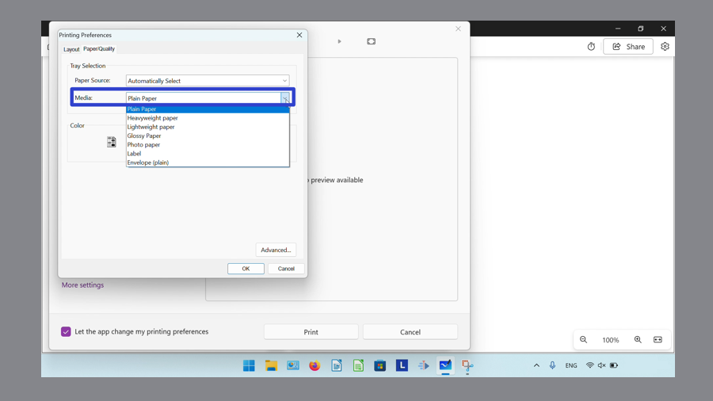
Save these instructions for later with this free PDF tutorial.